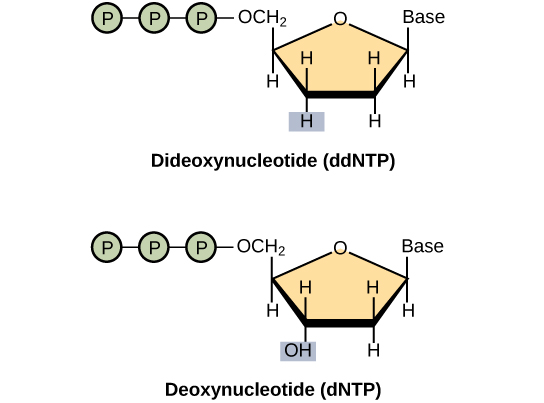
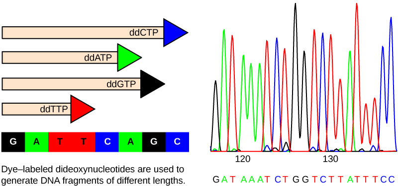
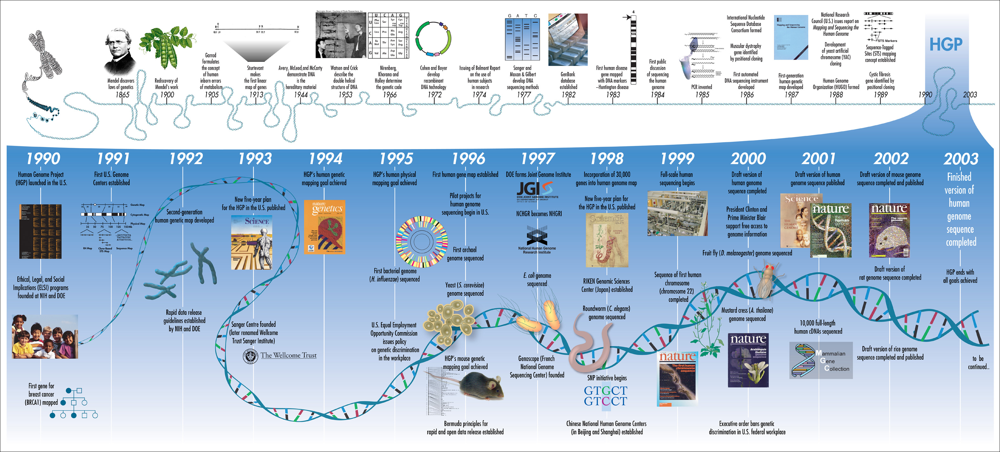

Prof. Harbert
The ability to sequence DNA is one of the greatest achievements of th field.
We will talk today a bit about the history of DNA sequencing and the main technologies involved.
Topics:
Traditional
NGS
Collaborative Research (HW)
Dr. Frederick Sanger (1918-2013) -- Developed sequencing by the chain terminating dideoxynucleotide method that now carries his name.

Image credit: "Whole-genome sequencing: Figure 1," by OpenStax College, Biology (CC BY 4.0)

Image credit: "Whole-genome sequencing: Figure 1," by OpenStax College, Biology (CC BY 4.0)
Produces high quality reads
How many runs at 500bp per read and (let's assume) 384 reads per run would it take to sequence the human genome at 3 billion bases one time?

Library prep and Illumina Seq: http://rmpiro.net/teaching/pub/lectures/fu-genomics/01-NGS_technology.pdf
Review of sequencing platforms (2017): https://www.omicsonline.org/open-access/generations-of-sequencing-technologies-from-first-to-next-generation-0974-8369-1000395.php?aid=87862
{kind=link}